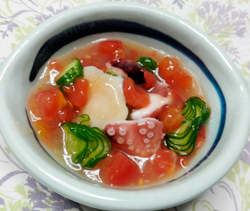

ホタテとタコの冷製トマトあんかけ
- 調理時間：30分
- （一人当たり）
- カロリー：161kcal
- たんぱく質：21.3g
- 脂質：0.7g
- 炭水化物：17.3g
- 塩分：1.7g


＜2人分＞
- ゆでタコ（刺身用）
- 100g
- ホタテの貝柱（刺身用）
- 100g
- キュウリ
- 1/2本
- トマト
（湯むきして２㎝角に切る - 大1個
- 水溶き片栗粉
- 適量
- 青ユズ
- 適宜
- ・だし汁
- 300ml
- ・みりん
- 大さじ1
- ・薄口しょうゆ
- 小さじ2
- ・塩
- 少々
A


- 1.キュウリは蛇腹に切って塩をふる。（小口切りでもよい）
2.水気をしぼって冷やしておく。 - 1.小鍋にAの材料を入れて、火にかける。
2.煮立ったら、下準備したトマトを加えてひと煮立ちさせる。
3.水溶き片栗粉でとろみをつけ、火をとめる。
4.粗熱がとれたら冷蔵庫で冷やしておく。 - 1.器にタコ、ホタテ、キュウリを盛り付け、トマトの餡をたっぷりかける。
2.仕上げに青ユズの果汁と刻んだ皮をちらして出来上がり。
ホタテとタコの冷製トマトあんかけ
ホタテは、脾と胃の働きを助けて、各臓器の機能を高めるため滋養強壮や老化防止にはたらくといわれています。そのホタテですが、タウリンの含有量は魚介類の中ではトップクラス。
タウリンは血液中のコレステロールや中性脂肪を減らし、肝機能を高める働きがあるので生活習慣病予防にも注目されている機能性成分です。
仕上げに使用した青ユズは、食欲がないときに薬味として使うと効果的。薬という文字が示す通り、少量でも料理を引き立て薬のように働きます。